5 Integration
The previous section discussed differentiation. This is just one aspect of calculus though, the other being integration.
5.1 Introduction
Many operations in mathematics have “inverse operations” (the mathematical version of CTRL+Z).
| Operation | Inverse Operation |
|---|---|
| \(+\) | \(-\) |
| \(\times\) | \(\div\) |
| \(\square^{2}\) | \(\sqrt{\square}\) |
| \(\square^{3}\) | \(\sqrt[3]{\square}\) |
| \(\sin(x)\) | \(\arcsin(x)\) |
| \(e^x\) | \(\ln(x)\) |
| \(2^x\) | \(\log_{2}x\) |
This means for instance that if you add 2 to a number, subtracting 2 from it will bring you back to the original number. If you square a number, for instance \(9^2\), you obtain \(81\). If you square root the \(81\), \((\sqrt{81})\), you return back to \(9\).
Differentiation also has it’s “undo” operation, called integration. Sometimes an integral is actually known as the “anti-derivative” because it is in a way the inverse operation to differentiation.
5.1.1 Anti-derivative
The integral of the function \(f(x)\) is a function whose derivative is \(f(x)\). So if \(f'(x)\) is the derivative of function \(f(x)\), then \(f(x)\) is the integral of \(f'(x)\).
Often the integral is denoted using a capital letter; \(F(x)\) is the integral of \(f(x)\). This means that \(F'(x)=f(x)\).
This creates a relationship whereby each operation undoes the other.
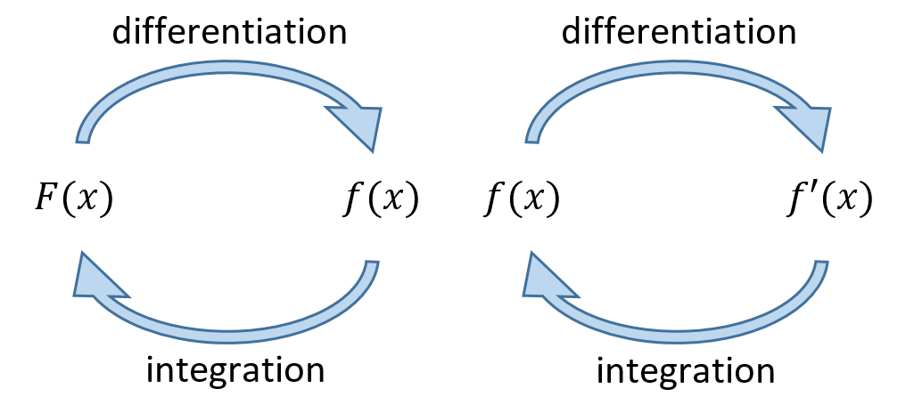
5.1.2 Constants of integration
Find an integral of \(f(x)\) where \(f(x)=\cos(x)\).
Since \((\sin(x))' = \cos(x)\), we have that \(\sin(x)\) is an integral of \(\cos(x)\).
However, it’s also true that \((\sin(x)+5)' = \cos(x)\). So it must be that \(\sin(x)+5\) is also an integral of \(\cos(x)\). In fact, there are an infinite number of possible integrals!
To give us a unique answer, we need to write \(F(x) = \sin(x) + C\) where \(C\in\mathbb{R}\) is a constant. This “\(+C\)” is called a constant of integration and is something we’ll add every time.
5.1.3 Notation
When differentiating we mentioned that there were a whole bunch of different notations people used. For integration, there’s pretty much just one: \(\int~\text{d}x\).1 The function that will be integrated, \(f(x)\), is called the integrand, and the variable \(x\) in the \(\text{d}x\) is the variable we are integrating with respect to.
This is put together with the \(f(x)\) and \(F(x)\) from above to give \[
\int{f(x)}~\text{d}x = F(x) + C.
\] In Wolfram Alpha the keyword integrate or int is used.
To use Wolfram Alpha to find that \[\int{2^{3x}-4 \cos(6x)~dx} = \frac{8^x}{\ln(8)} - \frac{2}{3} \sin(6x) + C,\] we write integrate 2^(3x)-4cos(6x) and get the following output.
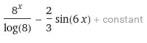
Remember that Wolfram Alpha and some tools like it use ‘\(\log\)’ to mean \(\ln\), rather than log base-10.
5.2 Definite Integrals
When we differentiated, there was always just one gradient for a given function. However we’ve seen that the same doesn’t hold for integration in general.
5.2.1 Indefinite
What we’ve seen so far is so-called indefinite integration, \(\displaystyle\int f(x)~\text{d}x = F(x) + C\).
Consider the interactive graph below. There are three parabolas. You can move the red one up and down by changing the value of \(c\). Move the blue point and see how the gradient changes.
You can see that all three parabolas have the same gradient \(2x\) where \(x\) is the \(x-\)coordinate of the point where the gradient is being measured. In other words, given \(f(x)\), there’s an infinite number of graphs/functions that have this particular gradient.
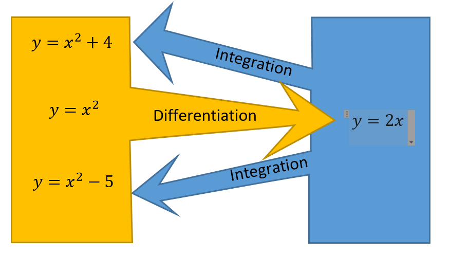
So without more information, we cannot know what constant disappeared when we differentiated and should reappear when we integrate. That is why we have to add “\(+C\)” at the end of the integration.
Returning to the example above, we can write the indefinite integral \(\int 2x~\text{d}x = x^2 + C\) where the “\(+C\)” means that we not know which of the parabolas we need.
Generally, for \(f(x) = x^n\) where \(n\in\mathbb{N}\), \(F(x) = \frac{x^{n+1}}{n+1} +C\).
5.2.2 Definite Integrals
Definite integration, or integration between two limits, returns a specific value rather than a function. Instead of the “\(+C\)” we use square brackets and substitute limits into the integral: \[ \int_b^a f(x)~\text{d}x = {[F(x)]}^a_b = F(a) - F(b) \]
You will not need to know how to write this, but you will need to interpret what the notation represents. The most direct reason that we use this technique is to calculate the area underneath a curve.
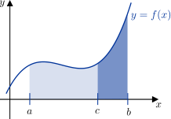
The light grey area from \(x = a\) to \(x = c\) can be represented by \[\int_a^c f(x)~\text{d}x = [F(x)]^a_c = F(c)-F(a).\] The blue area is represented by \[\int_c^b f(x)~\text{d}x = [F(x)]_c^b = F(b)-F(c).\] See how adding these together gives \(F(b) - F(a)\)?
Given three values \(a \leq c \leq b\), then the \[ \int_a^b f(x)~\text{d}x = \int_a^c f(x)~\text{d}x + \int_c^b f(x)~\text{d}x. \]
It’s not something we’ll get into much in this course, but this ‘splitting’ can be very useful when the domain contains a point that might cause trouble (e.g. \(\frac{1}{x}\) over \([-1,1]\), which includes \(x = 0\)).
Find the area underneath the graph \(y=6x^2 -9x+7\) for \(0 \leq x \leq 8\).
There are a few different Wolfram Alpha commands that could get us what we want
area under y=6x^2 -9x+7, 0 <= x <= 8,integrate 6x^2 -9x+7, 0 <= x <= 8,integrate 6x^2 -9x+7, from 0 to 8.
It doesn’t matter which we choose, all will return equivalent outputs.
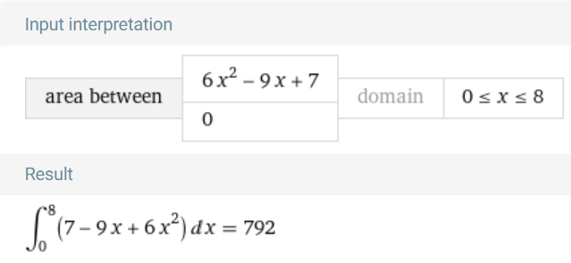
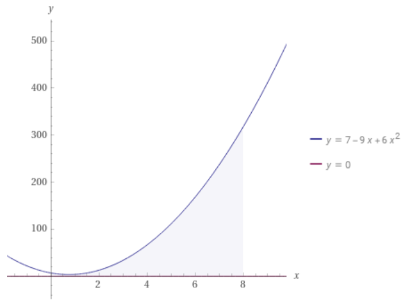
The area underneath the graph is \(792~\text{unit}^2\).
Find the area underneath the graph of \(y = 5 - x\) between \(x = 0\) and \(x = 5\).
If we use integrate 5-x, 0 <= x <= 5, we get the following output.
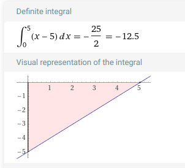
With our understanding so far, this would mean the area underneath the graph is \(-12.5 \text{units}^2\): a negative area! This is because it is below the \(x\)-axis. How this is interpreted will depend on the application of the problem.
In some applications, such as design or architecture, the area should never be negative. In others, where the area represents velocity or accumulated profit, then negative area has a legitimate interpretation as growing loss.
Applying integration to solve a problem like this is sometimes overkill! This area could have been calculated using the formula of area of a triangle \(A=\frac{1}{2}\text{base}\times\text{height}\). In this case it would have been \[A = \frac{1}{2}\cdot{}5\cdot{}5 = 12.5~\text{units}^2.\]
5.3 Initial value problems
Especially when working with real world problems, we sometimes have additional information about \(f(x)\), \(f'(x)\), and/or \(F(x)\). This information can help find a specific function when integrating, rather than a family of functions connected by a \(+C\). This is called an initial value problem.
Let \(f'(x)=6x+1\). It is given that \(f(5)=14\). Find the expression for \(f(x)\).
First, find the indefinite integral: \(f(x) = \int 6x+1~\text{d}x = 3x^2 + x + C\). Then substitute in the initial values to find the value of \(C\).
Since we are told that \(f(5)=14\) we need to substitute \(x=5\) into the expression and set it equal to \(14\). That is \(3(5)^2 + 5 + C = 14\) which after simplifying and rearranging gives \(C = -66\).
The acceleration of a particle is given by \(a(t)=8t^3 - 5t +9\). It is known that the velocity of the initial velocity of the particle is \(5\text{m/s}\). Find the function of the velocity.
We find that the indefinite integral is \[ v(t) = \int a(t)~\text{d}t = \int 8t^3 - 5t + 9~\text{d}t = 2t^4 - \frac{5}{2}t^2 + 9t + C. \] The question tells us that the initial velocity is \(5\text{m/s}\); this means that \(v(0) = 5\). Substituting and solving as before, we find that \(C = 5\).
Therefore the function for the velocity is \(v(t)=2t^4 - \frac52 t^2 + 9t + 5\).
5.4 Applications
So far, we’ve only looked at how to integrate but not really considered why one would want to integrate. Integration is often associated with computing areas like we’ve talked about, but it can also find volumes and other physical quantities too.
Integration is also important when solving of differential equations - though that’s a topic beyond the scope of this course. These can be used to model all sorts of real-world phenomena, including population growth, weather, and the motion of planets, so finding solutions is of great practical significance.
5.4.1 Acceleration, velocity, displacement
Initially, we looked at the link between acceleration, velocity and displacement when it came to differentiation. Let’s look at this again using what we now know about integration.
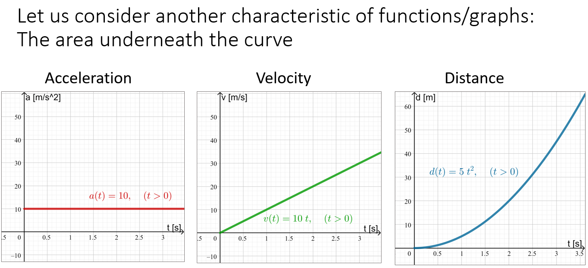
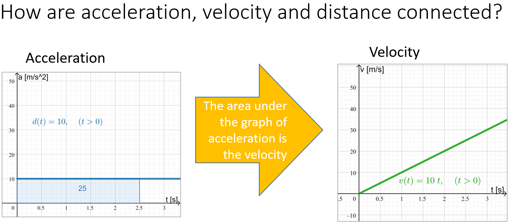
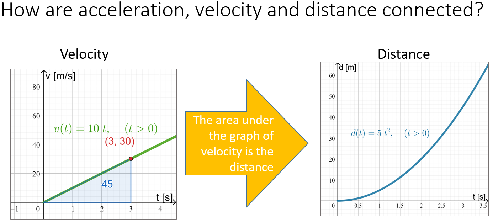
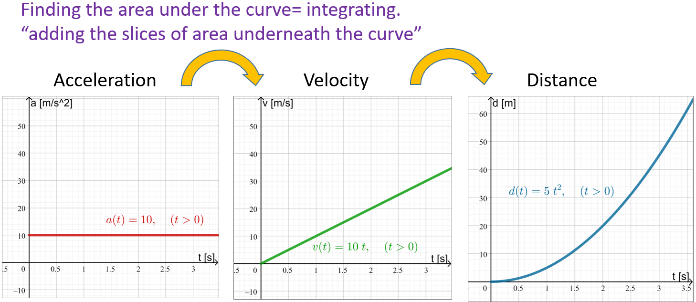
This speaks to how integration can link these concepts together.
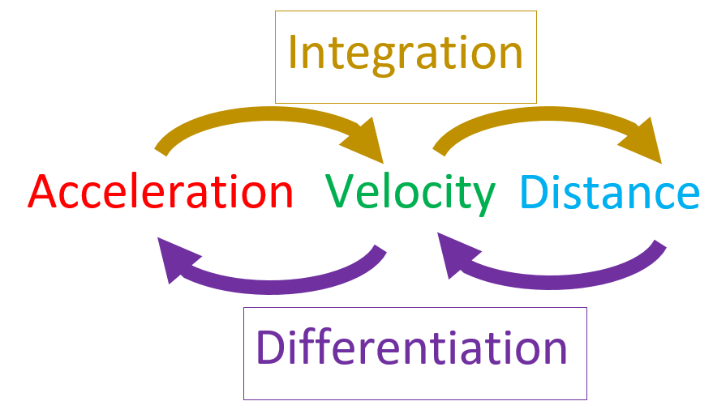
Footnotes
We don’t get into this in MSDA, but the taaaaaall S can be thought of as an infinite sum and the \(\text{d}x\) as the infinitesimal. This defines integration as the infinite sum of infinitely small things!↩︎